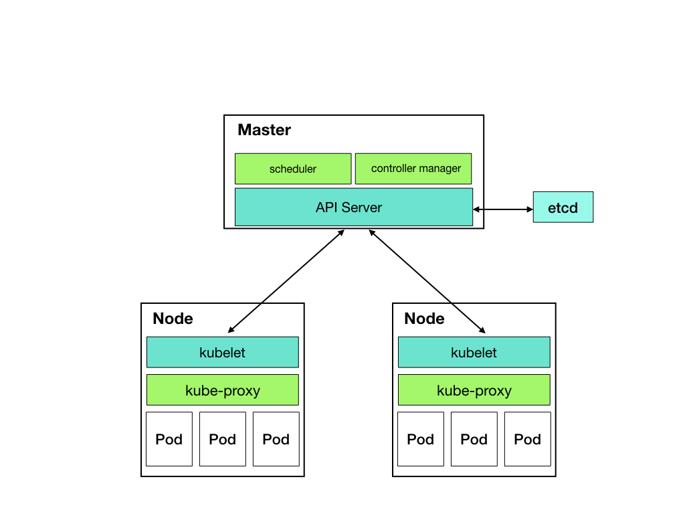

什么是Kubernetes
简单来说就是一个容器的集群管理平台，你程序所需要的计算资源不再受单机资源的约束，可以讲整个集群拥有的计算资源看成一块云，资源不够用再加节点，动态伸缩你的程序运行的数量就可以了。它不仅仅是集群管理，还可以让你只需要关注自己程序的逻辑，而服务发现、负载均衡、自动伸缩、滚动升级等这些你都不需要关心，它也需要不关心你用的什么语言，不用侵入你的代码就能帮你完成这些，甚至它还有办法在你程序有bug的情况下尽量让你的程序正常提供服务。
kubernetes也是云原生的核心，整个生态飞速发展，日益壮大。服务网格(Service Mesh) 的出现如虎添翼，可以轻松实现和管理微服务，服务治理框架可能也将不再需要。
Kubernetes架构
为了更容易理解kubernetes架构，我先画了个简单版的架构图，屏蔽了很多细节很容易看出来，kubernetes是用master来管理其它Node（工作负载的节点），当然master自身也是可以安装成Node的。
核心组件说明：
- apiserver 提供了资源操作的唯一入口，并提供认证、授权、访问控制、API注册和发现等机制；
- etcd 保存了整个集群的状态；
- controller manager 负责维护集群的状态，比如故障检测、自动扩展、滚动更新等；
- scheduler 负责资源的调度，按照预定的调度策略将Pod调度到相应的机器上；
- kubelet 负责维护容器的生命周期，同时也负责Volume（CVI）和网络（CNI）的管理；
- kube-proxy 负责为Service提供cluster内部的服务发现和负载均衡；